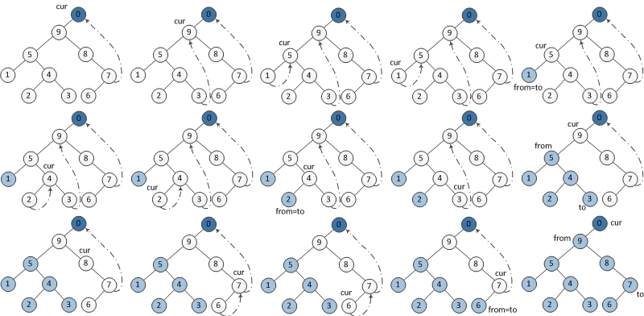

二叉树的遍历
目录
先序+中序、后序+中序、层序+中序 都可唯一确定一棵二叉树
1 测试代码
├── queue.h ├── stack.h ├── tree.cpp └── tree.h
其中，stack.h 是顺序栈一节的代码内容。queue.h 是循环队列一节的代码内容
2 二叉树数据结构
typedef struct node { int data; struct node *lchild; struct node *rchild; }node, *BiTree;
3 递归遍历
// 先序遍历二叉树 void PreOrder(BiTree T) { if(T) { visit(T); PreOrder(T->lchild); PreOrder(T->rchild); } } // 中序遍历二叉树 void InOrder(BiTree T) { if(T) { InOrder(T->lchild); visit(T); InOrder(T->rchild); } } // 后续遍历二叉树 void PostOrder(BiTree T) { if(T) { PostOrder(T->lchild); PostOrder(T->rchild); visit(T); } }
4 非递归遍历
4.1 层序遍历（借助队列）
// 从左向右层次遍历二叉树（需要借助一个队列） void LevelOrder(BiTree T) { if(!T) return; queue Q; init_queue(Q); enqueue(Q, T); BiTree t; while(!is_empty(Q)) { dequeue(Q, t); visit(t); if(t->lchild) enqueue(Q, t->lchild); if(t->rchild) enqueue(Q, t->rchild); } }
4.2 先序遍历（借助栈）
// 非递归先序遍历（借助栈） void PreOrder2(BiTree T) { stack S; init_stack(S); BiTree t = T; while(t || !is_empty(S)) { if(t) { visit(t); push(S, t); t = t->lchild; } else { pop(S, t); t = t->rchild; } } }
4.3 中序遍历（借助栈）
// 非递归中序遍历（借助栈） void InOrder2(BiTree T) { stack S; init_stack(S); BiTree t = T; while(t || !is_empty(S)) { if(t) // 不断把左孩子压栈 { push(S, t); t = t->lchild; } else // 访问栈顶元素，转向右孩子 { pop(S, t); visit(t); t = t->rchild; } } }
4.4 后序遍历（借助栈）
// 非递归后序遍历（借助栈） // 非递归后序遍历和先序、中序遍历不同的是需要记录最近一次访问的结点 void PostOrder2(BiTree T) { stack S; init_stack(S); BiTree t = T; BiTree tmp = NULL; // 表示最近一次访问的结点，用于防止从右子树返回时再次访问右子树 while(t || !is_empty(S)) { if(t) // 不断进入左子树 { push(S, t); t = t->lchild; } else { get_top(S, t); // 如果右子树存在且首次访问右子树，就进入右子树 if(t->rchild && t->rchild != tmp) { t = t->rchild; push(S, t); t = t->lchild; } else // 访问当前子树的根结点 { pop(S, t); visit(t); tmp = t; // 记录最近一次访问的结点（如果该结点是其父结点的右孩子，防止返回到父结点时再次进入该结点） t = NULL; } } } }
5 morris traversal（非递归、不借助栈）
空间复杂度 O(1)
时间复杂度 O(n)
morris traversal 用到了线索二叉树的思想，在 morris 方法中不需要为每个节点额外分配指针指向其前驱（predecessor）和后继节点（successor），只需要利用叶子节点中的左右空指针指向某种顺序遍历下的前驱结点或后继结点就可以了。
5.1 中序遍历

void InOrder3(BiTree T) { BiTree cur = T, prev = NULL; while (cur) { if (!cur->lchild) // 1. 左子树为 NULL，访问当前结点，遍历右子树；或者换句话说，步骤 2 改动了二叉树，通过步骤 1 来把当前结点回溯到后继结点 { visit(cur); cur = cur->rchild; } else { // 在左子树中找到当前结点的前驱结点 prev = cur->lchild; while (prev->rchild && prev->rchild != cur) prev = prev->rchild; if (!prev->rchild) // 2. 改动二叉树：使前驱结点的右孩子指向当前结点 { prev->rchild = cur; cur = cur->lchild; } else // 3. 恢复二叉树：使前驱结点的右孩子恢复为 NULL。此时左子树已经遍历过了，所以需要恢复当前结点的前驱结点的右孩子为 NULL，并开始遍历右孩子 { prev->rchild = NULL; visit(cur); cur = cur->rchild; } } } }
5.2 先序遍历

void PreOrder3(BiTree T) { BiTree cur = T, prev = NULL; while (cur) { if (!cur->lchild) { visit(cur); cur = cur->rchild; } else { prev = cur->lchild; while (prev->rchild && prev->rchild != cur) prev = prev->rchild; if (!prev->rchild) { visit(cur); prev->rchild = cur; cur = cur->lchild; } else { prev->rchild = NULL; cur = cur->rchild; } } } }
5.3 后序遍历

void reverse(BiTree from, BiTree to) // reverse the tree nodes 'from' -> 'to'. { if (from == to) return; BiTree x = from, y = from->rchild, z; while (true) { z = y->rchild; y->rchild = x; x = y; y = z; if (x == to) break; } } void printReverse(BiTree from, BiTree to) // print the reversed tree nodes 'from' -> 'to'. { reverse(from, to); BiTree p = to; while (true) { visit(p); if (p == from) break; p = p->rchild; } reverse(to, from); } void PostOrder3(BiTree T) { struct node dump; dump.lchild = T; BiTree cur = &dump, prev = NULL; while (cur) { if (!cur->lchild) { cur = cur->rchild; } else { prev = cur->lchild; while (prev->rchild && prev->rchild != cur) prev = prev->rchild; if (!prev->rchild) { prev->rchild = cur; cur = cur->lchild; } else { printReverse(cur->lchild, prev); // call print prev->rchild = NULL; cur = cur->rchild; } } } }